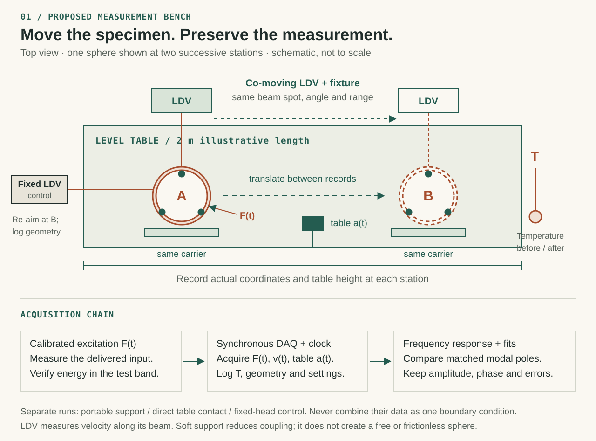
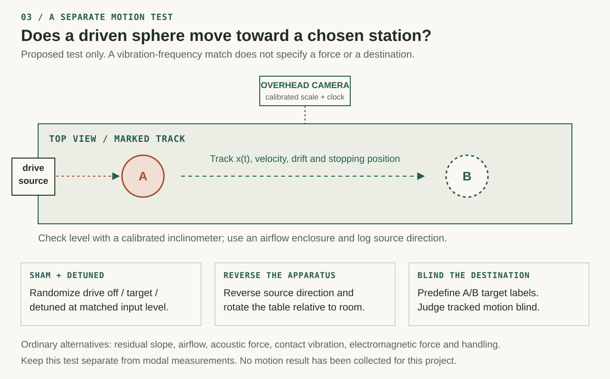

A family of modes.
Material, geometry, stress and temperature determine resonances. The breathing mode here is one member of that family.
THE COPPER SPHERE EXPERIMENT
What changes when a copper sphere moves across a table? Separate the object’s vibration from its surroundings, then design a measurement that can tell them apart.
Interactive model · proposed physical experiment
A → B COMPARISON
The same sphere, measured in two separate runs. A and B are positions along the table.
Amplitude is divided by one shared maximum across both traces. Raw exports retain the model’s units. A response peak can differ from an isolated object’s natural frequency.
READ THE RESULT
Loading the physical model…
This simulation calculates selected mechanical modes. It does not capture every frequency of an object or establish a position-specific frequency that moves matter.
Read the mathematical specification ↗Material, geometry, stress and temperature determine resonances. The breathing mode here is one member of that family.
Supporting a sphere changes its mechanical boundary conditions. A flat table is still a vibrating, load-bearing object.
Excitation, sensor direction and bandwidth determine which modes are visible. A spectrum is a measurement of a defined channel.
AN EVIDENCE MAP
Explore the sources and methods behind this experiment. Every connection has a stated relationship. A shared topic does not establish a shared physical mechanism.
FROM A CLAIM TO A TEST
These are proposed apparatus and procedures. No physical trial or position-dependent anomaly is reported here.

PREDICTIONS THAT CAN FAIL


THE MEASUREMENT TOOLCHAIN
SELECTED SOURCE REGISTER